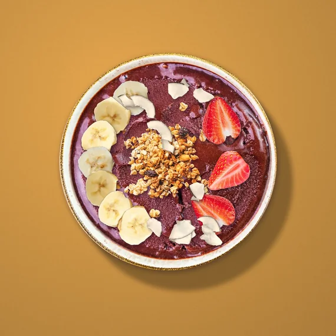

3 min read
How to make an açaí bowl at home without a blender
Make an açaí bowl at home with no blender: scoop 2/3 cup of açaí sorbet, add granola, banana, strawberry and coconut, and serve. The base is already made.
A home açaí bowl usually starts with a blender: frozen purée, a splash of liquid, a banana, a minute of noise, and a base that comes out too thin or too thick. There is a shorter route. Start with açaí sorbet, and the base is already made.
Do you need a blender to make an açaí bowl?
Not if you start with sorbet. The blender's job is to turn frozen purée into something you can eat with a spoon. Açaí sorbet is already that. It was churned and frozen at the factory. At home, the only tool you need is a scoop.
What do you need for an açaí bowl without a blender?
- A pint of Organic Açaí Original Sensation, 500 mL (16.9 fl oz), or one of our other açaí flavors.
- A bowl. A shallow one shows off the toppings.
- A 2/3-cup scoop or a measuring cup, so the portion is the same every time.
- Toppings. Our standard four are granola, banana, strawberry and coconut.
How do you make an açaí bowl with sorbet?
Three steps: scoop, top, serve.
- Scoop. Take the pint from the freezer and scoop 2/3 cup into the bowl. A scoop dipped in warm water goes through firm sorbet more easily. Put the pint straight back in the freezer.
- Top. Add the toppings; don't stir them in. Granola for crunch, banana and strawberry for fruit, coconut to finish.
- Serve. Eat it right away. Sorbet softens quickly at room temperature.
That is the whole method. There is no mix to get right and no base to rescue.

How much sorbet goes in one açaí bowl?
Our portion standard is 2/3 cup. That is the serving size printed on the pint, and it is the same scoop we use for the foodservice bucket. A 500 mL pint gives about three bowls. Toppings sit on top of that, in whatever amount you like.
What toppings go on an açaí bowl?
The four we use are granola, banana, strawberry and coconut. They are toppings, not ingredients. The sorbet is complete on its own; you add them at the bowl. You do not need all four. One or two makes a fine weekday bowl. Add fresh fruit and other toppings if you like.
Which açaí flavor should you use for a bowl?
Any of the four. Organic Açaí Original Sensation is 60% açaí, and it is the one we would start with. Açaí Banana Sunrise is 40% açaí with 6% banana. Açaí Strawberry Crush is 40% açaí with 6% strawberry. Açaí Zero Sugar (Not a low calorie food.) is 60% açaí.
The fruit sorbets work in a bowl too. A scoop of Organic Mango or Dragon Fruit & Pineapple next to a scoop of açaí makes a two-color bowl with no extra effort.
How do you store açaí sorbet at home?
Keep it frozen at 0 °F (−18 °C) or below. Do not let it thaw and refreeze; temperature changes affect the texture. Keep the container tightly sealed, and store it in the coldest part of the freezer, away from the door. The best-before date is on the container.
Can you make an açaí bowl from a Grab'n Go cup?
Yes. The 250 mL cup comes with a wooden spoon and holds one serving. Open it, add toppings if you have them, and eat from the cup. It is the bowl with no bowl, and no washing up.
Why not just blend?
You can. A blender gives you a bowl you tuned yourself, and some people like the ritual. But a blender base has moving parts: the liquid, the fruit, the run time, the dishes. Sorbet removes them. It is one recipe, made in one place in the Brazilian Amazon, and it comes out the same on a Tuesday morning as it did on Saturday.
Related: Açaí bowl toppings: what to put on top, and how · Organic Açaí Original Sensation · All ten flavors · Serving ideas
Austropical açaí and tropical fruit sorbets come to US freezers in March 2027. The first container carries Organic Açaí Original Sensation and Organic Mango; the rest of the range follows.
Açaí Zero Sugar: Not a low calorie food. Product of Brazil.